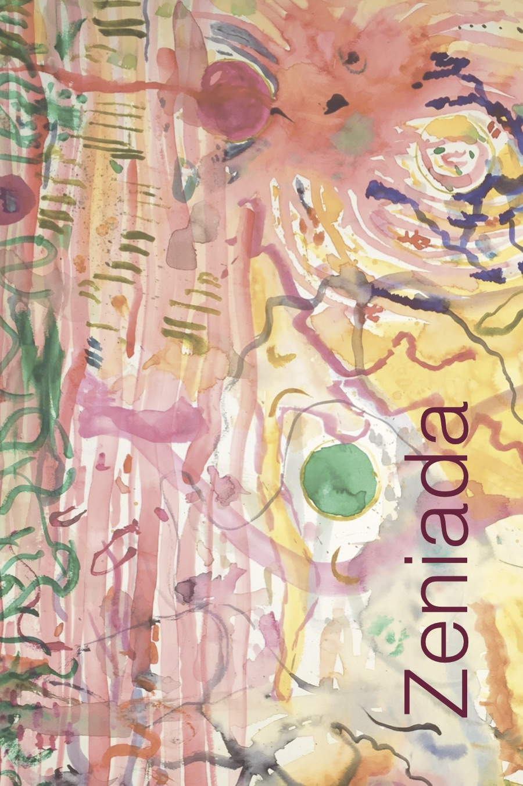
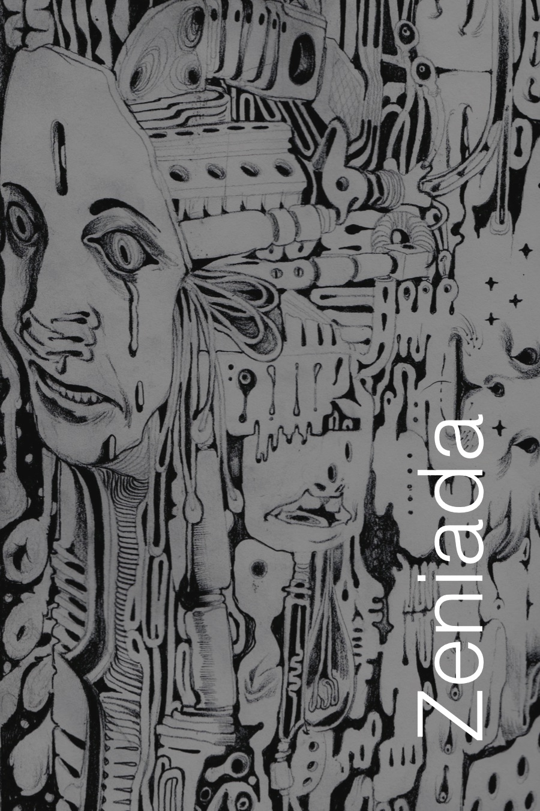
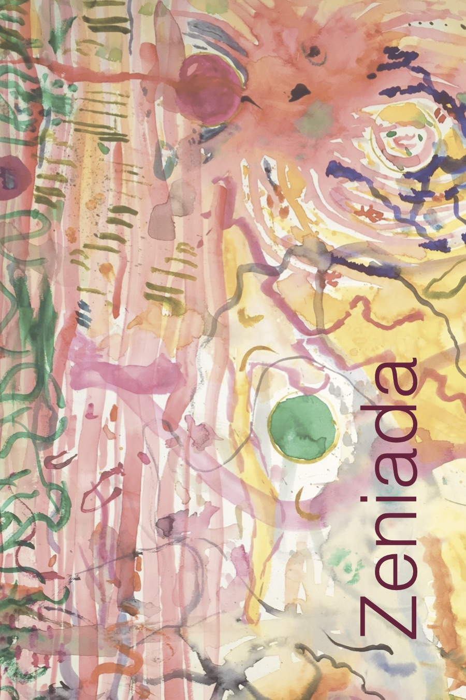
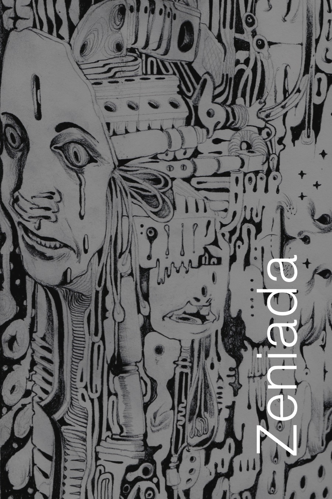

ZeniadaSpring 2018
Nani’s Morning Routine
I. Mint Plant (Provides mint)
The mint plant rests on tiles near the gutter.
Leathery leaves crinkle to her touch, she sifts,
Looking for a mature leaf to pull from stem.
The crickets swell, pinecones clamp shut
In anticipation for an early-morning drizzle.
II. Puri ("Poori")
Cracked nails meet frying oil, somehow
No spatula needed, she flips the puri—
Dough thins and crisps in a speckled bowl
Rises to form air-filled pocket, plucked
To cool on a sloppy roll of parchment.
III. Chai ("Chah")
She thumbs through the spice rack—
Turmeric, cardamom, saffron, to find chai.
Tin cracks open, two tablespoons blends
With milk and sugar, mint leaves rest atop
A film, soon pinched from steaming mug.
IV. Ghee (Butter)
Stirrings in the house, she heats the ghee.
Bubbles coalesce in pots, a half-sphere spoon
Spreads a layer of glaze across a disk of bread.
Sugar sprinkled, placemats set, enter family.
She goes to pray.
V. Temple (In-home)
Incense clipped to sandalwood tray burns lazy,
Bhajans moan through scented air, cotton wicks blaze
In make-shift candle perched on silver tray.
Eyes closed, beads are wrung and lips quiver.
Broken glass down the hall, but now she’s serving God.
Milan Patel is from Mountain View, California. He currently attends Johns Hopkins University, where he is studying Writing Seminars and Neuroscience.
Next | Table of ContentsFor One Day
let me be a swallow
in southern Spain while
drinking on the wing
and roosting in a red barn
of someone's grandparents.
I made a list when I was little,
but if I only have one day let me whisper
to the whales to stay under during the eclipse.
I can join them maybe and become
a flying fish who leaps into the eighth sea.
My scales catch fire and I am
a casque-headed lizard dubbed worthy by Him.
Give me perfect vision, so I can be
an astronaut and spin the earth back years.
I'll spy on others sleeping and listen to
the breath and plant dreams
in their nightlights.
For just one day let me write
the perfect poem with words
like peacock ennui or galaxies
of dust in light.
Let me hold some color
when I go,
and the next
breakfast I will
still be.
Your wandering,
Child
Sophie Gregory is a first-year student studying Written Arts at Bard College. She is originally from Warwick, Rhode Island.
Previous | Next | Table of ContentsEl Niño Who Lived
"14?!"" I hear them say as if it
is a big number,
back in my tierra natal
Madres breathe life into us 14
at a time.
Mi Madre Clara Arauz did it too,
But not all of her children could stay for her.
"7?!" I hear them say as if it
is a big number,
back in my tierra natal
Madres lose their babies 7
at a time.
Mi Madre Clara Arauz did too,
y not one of us could help her.
"47?!"" I hear them say as if it
Is a big number,
Back in my tierra natal-
No,
Aqui en esta tierra te agarran y no te dejan ir
Te dejan ir a la mierda.
Asalia Zarai Arauz is from Paramount, California. She is an English and Sociology double major at Willamette University. Her writing and studies are focused on sharing, understanding, and expressing her Nicaraguan and Mexican cultures.
Previous | Next | Table of Contentsspooky
Joel Bangerter is an English major at Johns Hopkins University.
Previous | Next | Table of ContentsAllopatric
The river severs the chapel into two halves
with rapids of silver knives. When the sun goes
down, the riverbed bleeds. On one side,
a steam engine runs around toy tracks, the other
is grandmother’s quilt, the one I used to use
to bury myself. It is warm underground.
Speciation depends upon isolation.
In the river there are fish,
scales falling upward like rain until
the surface of the water glitters. I
can see my reflection; I cannot recognize
the fish, cannot name them in Latin, in
vernacular, in love. Suddenly, water
is strange to me and tastes metallic.
The air is white with ash and
the air does not contain your breath.
I choke. The world hurricanes.
I am severed from you by something
like a hurricane. When Darwin’s finches
were blown away to the island, they evolved
into artifacts. Miles of sagebrush
and scrap metal and barns falling
in on themselves. Distance as
panorama. Body as diorama. You
are a porcelain figurine
in the center. You wear white.
My body is a house where I no longer
live, genetic history that I carry with me.
I speciate. I river. I am transitive
and transitory but I still
have a mouth. I am not the same
as I used to be. When you stand
on the rock ledge and look
into me, do not hesitate
to jump. I will hold you suspended,
even when the water runs cold.
Ben Read lives in Portland, Oregon, where he studies at Reed College and serves on the review board for the Reed College Creative Review. His work has been recognized by Tinderbox Poetry Journal, Gigantic Sequins, and The Adroit Journal, and he was named a 2015 Foyle Young Poet of the Year by the Poetry Society of the United Kingdom. His favorite muse is the river.
Previous | Next | Table of ContentsKeokuk, Iowa
A myth of a man watches over our village.
River whales are best viewed from the bluff.
A single road holds the most gold.
Stone paths hold no fear under a night sky.
A spirit house welcomes those from the south.
We dance with red lipstick stuck to our teeth.
Pride bruises the town with purple and gray.
Everyone wants to see our rainbows of snow.
We drink brown water from bricks that hold our art.
A red glow sets the mood for the best joint in town.
Chew the air: that taste is grain.
The highest point leads us to heaven.
We haunt those that leave, they wish they would have stayed.
Madalyn Whitaker was born and raised in Keokuk, Iowa. She is currently living in Iowa City studying at the University of Iowa as an English and Creative Writing major with an emphasis in Publishing.
Previous | Next | Table of ContentsInterconnected
Color
Elena Hughes is originally from Connecticut. She now lives in Baltimore and studies Neuroscience at Johns Hopkins University.
Previous | Next | Table of ContentsJanuary 8, 2018
Cream patisserie, rushes in from all
Sides. Drives across tundra east
Connecticut. Then, to gather again strings
Between window seams: the cool air of
Beginnings or in fact, steady icicles
Drooping lazily and with little effort.
I told you before that this was an escape
From one frozen place to the other—
The climate: similar but more damp
And often bitter, though the summers
Are considered "pleasant." We move
East and west and repeat repressed traditions.
Was it a sister or friend, at a time when
Everything else mattered? My grandmother
Was Russian back when tsars were Russian.
Alexander Zondervan is currently an undergraduate at Bard College where he studies literature. Focusing on the relationships between language and material, he is curious about the ways language manifests in historical and public domains.
Previous | Next | Table of ContentsReturn
Sun rays eschewed by clouds light up
the underwear on my floor,
dotted with blue flowers and v-shaped,
instead of my pelvis,
commanding.
I follow,
changing into clothes that leave room
for imagined skin,
ignoring my reflection on the clock’s solid glass face
as it chants in binary,
must march at its pace to get anything done.
In first period we read Anne Sexton in rows:
throat still recovering from the time I had to be Cecily
so I don’t raise my hand to
choke out the sharp edges of I have been her kind.
I turn the page and read as a girl with long blonde hair
sings about femininity,
clicking of the clocking blurring in the background as
a line raises my hand for the bathroom.
Empty stalls and a reflection hear me say:
I'm no more a woman than Christ was a man
before watching myself cut my hair with the scissors
I snuck in my pocket,
as I marvel at the shape my lips make while forming truth.
Madelyn Jones is currently a sophomore at Willamette University studying English with an emphasis in creative writing. She is originally from Glendora, California.
Previous | Next | Table of Contents1 October
I walked with a mug of tea for the last threads of Sunday’s sun. A kid directs some parallel parking in stern Japanese. In the next space is a white Honda civic with a bottle of champagne in the cup holder. Beyond that the ATM is temporarily out of service. The laminated carpet that was a squirrel shifts in the wind, pink-gingham-shirted waiter leaving work winds around to inspect the corpse and guffaws.
I sat down in the skate park but had to stub out a cigarette when a little girl came over to me
and scrambled the length of the half pipe, back and forth, until she gained enough momentum to hoist herself onto the shelf of the ramp turned and looked at me, expectantly, waiting for approval. I nod to her.
Her brother follows with a tennis ball, plays catch with himself against the skate ramp. Points out that my shoes are untied and then joins his sister on the slope; they watch me with their corn silk heads tilted to the side. I tilt and look too, one hand extended to see through the sun.
I have to go suddenly with haste. With what I know about the wherewithall that walks in men. And women too.
ClydaJane Dansdill is a artist and writer from Connecticut. She studies poetry and non-fiction at Bard College in New York's Hudson Valley.
Previous | Next | Table of ContentsSalad Days
I.
my plump cheekbones
and rosebud nose
are three marbles
resting underneath my skin.
blushing fingers
numbed by cold
graze my gossamer hair
levitated by the electric static
accompanying snow flurries in the air.
II.
the time is eventide.
the moon has been replaced
by an ochre cork,
engulfed in raspberry clouds.
stars make their entrances,
pinpricking the black canvas
of the midnight sky,
before dissolving
into the pastel hues
of returning daybreak.
III.
camera flashes flicker
in the opaque sky smoke.
bawling thunder
sounds like cascading boulders
and create aftershocks in my chest.
the shrieking, dizzied wind
drills teardrops into my window,
like impatient, tapping fingernails
trying to lure me out
as I tremble under the sheets
of my makeshift cave.
Born and raised in New York City, Gillian Lazarus is a junior Written Arts major currently studying at Bard College. She enjoys experimenting with various genres of writing, including fiction, nonfiction, and poetry. Her first publication, "Salad Days," is a rendition of Adrienne Rich’s poem "Snapshots of a Daughter-in-Law."
Previous | Next | Table of ContentsProject 043
Kelly Pau studies Comparative Literature at Reed College. She is a born and bred New York City rat.
Previous | Table of Contents 


